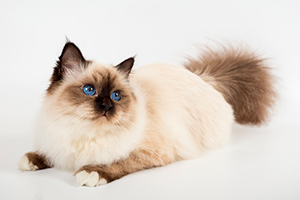
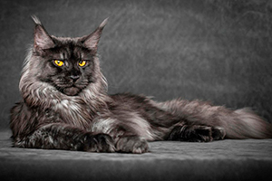
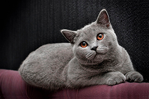

| порода | описание | фото | цена |
| Бирманская кошка | Священная бирма — порода полудлинношёрстных кошек колор-пойнтового окраса, которая по одной из легенд ведёт своё происхождение из Бирмы. Её не следует путать с бурманской кошкой, которая является отдельной породой короткошёрстных кошек. |  | 3000р. | Мейн-ку́н | Мейн-ку́н — порода кошек, которая произошла от кошек штата Мэн на северо-востоке США. Аборигенная порода кошек Северной Америки. Название «мейн-кун» является производным от двух слов. Первое-это название штата Мейн, а второе производное от слова ракун, которое переводится, как енот. |  | 4000р. | Британская кошка | Британские короткошёрстные — короткошёрстные кошки. Как правило, это сильные и крепкие кошки. Бывают от средних до крупных размеров. Согласно легенде, являются потомками Чеширского кота. |  | 2500р. |